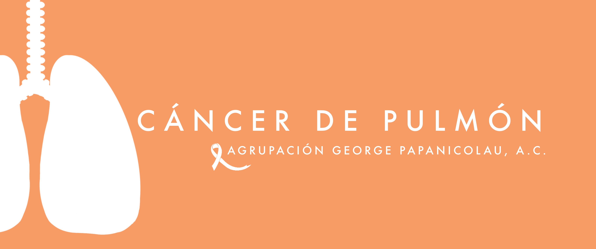

{% extends "cursos/cursos_base.html" %}
{% from "cursos/_article.html" import section_header %}
{% set section_headers = {
"que-es": "¿QUÉ ES EL CANCER DE PULMÓN?",
"sintomas": "SÍNTOMAS",
"factores-de-riesgo": "FACTORES DE RIESGO",
"prevencion": "PREVENCIÓN",
"instituciones": "INSTITUCIONES",
"actividades": "ACTIVIDADES",
"evaluacion": "EVALUACIÓN" } %}
{% block title %}
AGP - Cáncer de Pulmón
{% endblock %}
{% block banner %}

{% endblock banner %}
{% block article %}
{# #}
{{section_header("que-es", section_headers)}}
Se origina en los pulmones. Normalmente, comienza en la reproducción acelerada de las células que revisten los
bronquios
y otras partes del pulmón, como los bronquiolos o los alvéolos.
Los síntomas son tardías, y por eso el cáncer de pulmón se diagnostica en etapas avanzadas. Los síntomas
dependen de la
localización y extensión del tumor en el pulmón. Los más frecuentes son los siguientes:
Tos.
Hemoptisis (Expulsión de sangre de los pulmones o bronquios).
Disnea (Dificultad para respirar o sensación de ahogo).
Dolor torácico (Dolor entre el diafragma y la base del cuello, tórax).
Disfonía (Cambios anormales en la voz, afección de la cuerdas vocales).
Disfagia (Dificultad para tragar alimentos sólidos o líquidos, Sensación de que la comida se queda
detenida o
mitad del tórax).
Síndrome de Horner (Afecta a las estructuras nerviosas en la parte más alta del tórax: Pupillas
contraidas, párpado caído,
sequedad facial, aspecto hundido del ojo, falta de sudoración en la mitad de la cara).
 {# #}
{{section_header("sintomas", section_headers)}}
{# #}
{{section_header("sintomas", section_headers)}}